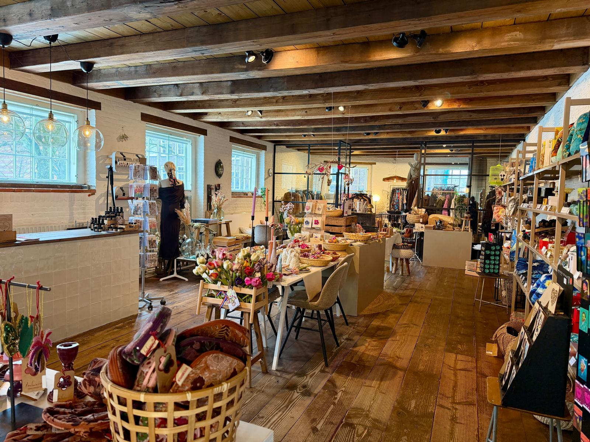
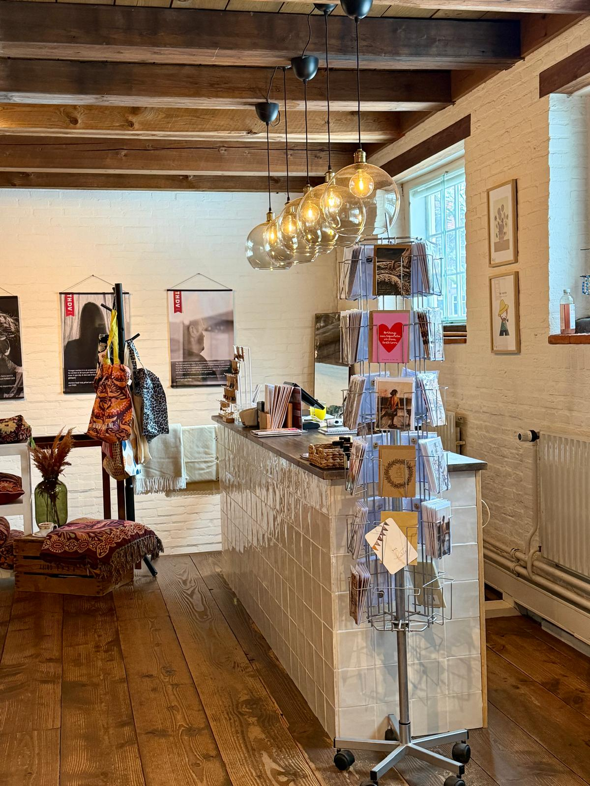
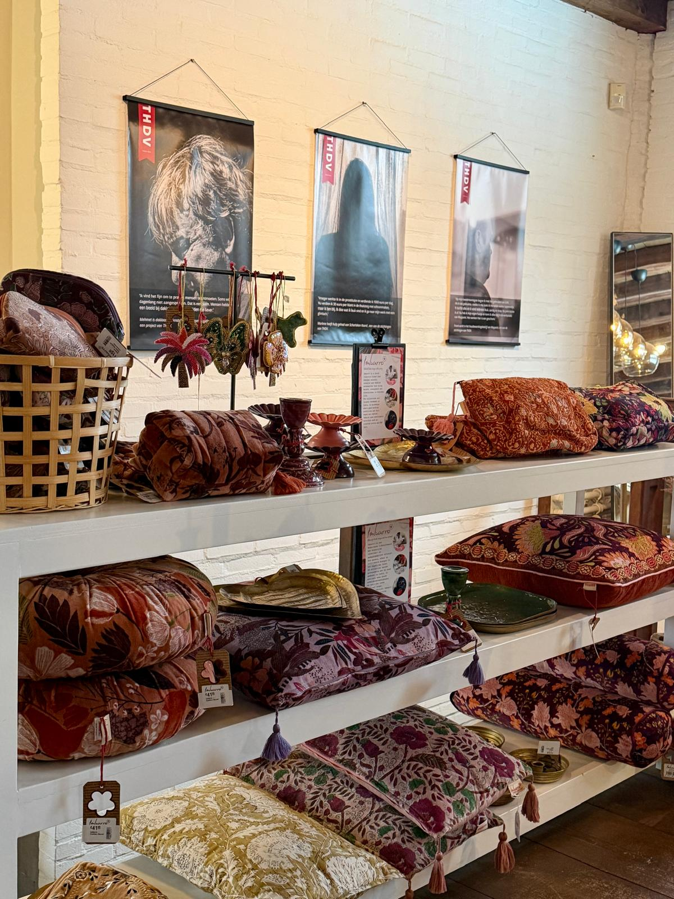
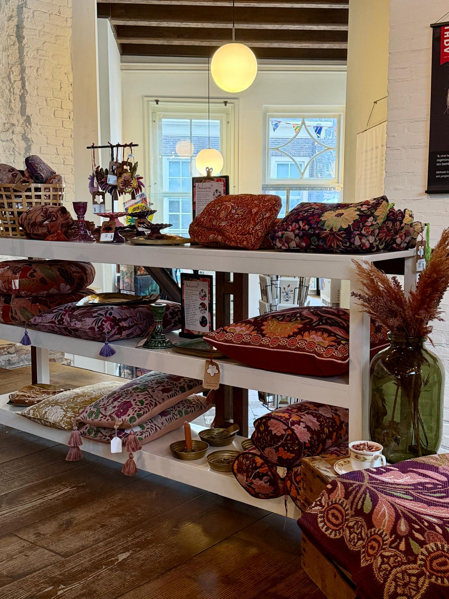
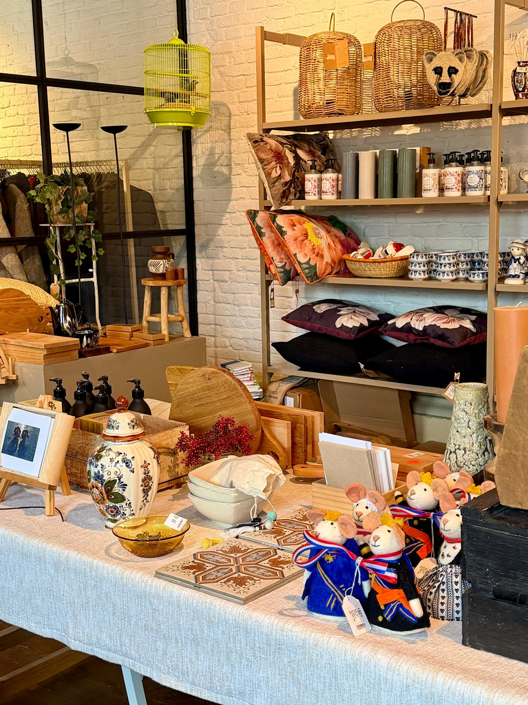
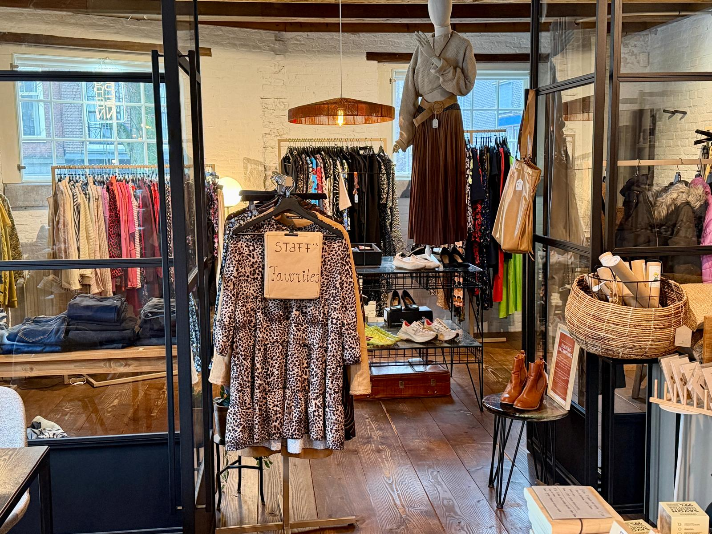
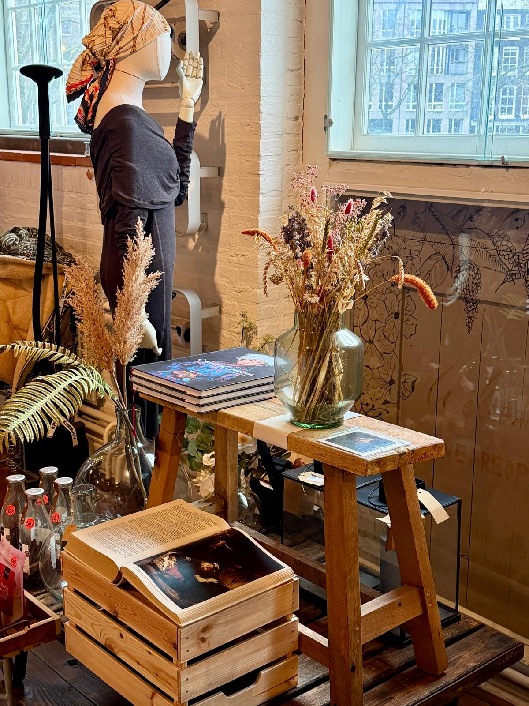

Elk product in onze winkel vertelt een verhaal. Van handgemaakte textiel tot duurzame secondhand kleding – alles is met zorg geselecteerd en heeft impact.
Every product in our shop tells a story. From handcrafted textiles to sustainable secondhand clothing – everything is carefully selected and makes a real impact.




Handgemaakte vilt en textielproducten van Sjaal met Verhaal, gemaakt door blinde ambachtslieden in India. Elk stuk is uniek en draagt bij aan hun economische onafhankelijkheid.
Handcrafted felt and textile products from Sjaal met Verhaal, made by blind artisans in India. Each piece is unique and supports their economic independence.
Gemaakt door: Blinde ambachtslieden in India
Made by: Blind artisans in India

Bijzondere geschenken en handgemaakte keramiek. Van sierraden tot decoratieve voorwerpen – alles met aandacht voor detail. Sommige stukken zijn gemaakt door onze eigen werknemers met achtergronden van kwetsbaarheid.
Unique gifts and handmade ceramics. From jewellery to decorative pieces – everything crafted with attention to detail. Some items are made by our own team members who have experienced vulnerable situations.
Gemaakt door: Lokale makers en ons team
Made by: Local makers and our team

Een zorgvuldig geselecteerde collectie duurzame, tweedehands kleding voor alle seizoenen. We kiezen alleen voor schone, actuele stukken. De opbrengsten gaan volledig naar onze sociale projecten.
A carefully curated collection of sustainable, secondhand clothing for every season. We only select clean, contemporary pieces. All proceeds support our social projects.
Ondersteunt: Onze sociale projecten
Supports: Our social projects

Decoratie, boeken en sfeervolle objecten voor je huis. Van gedroogde bloemen tot kaarten en curiositeiten – alles draagt bij aan warmte en gezelligheid.
Decoration, books and cosy objects for your home. From dried flowers to cards and curiosities – everything adds warmth and atmosphere to your space.
Gemaakt door: Diverse lokale en internationale makers
Made by: Various local and international makers
Heb je schone, actuele kleding die je niet meer draagt? We accepteren graag donaties! Zorg ervoor dat de kleding in goede staat is. Alle opbrengsten gaan direct naar onze sociale projecten.
Have clean, up-to-date clothing you no longer wear? We'd love to accept donations! Please make sure items are in good condition. All proceeds go directly to support our social projects.
Beleef onze collectie in ons warme winkelije op Noordermarkt 45, Amsterdam.
Experience our collection in our cosy shop at Noordermarkt 45, Amsterdam.
Maandag tot zaterdag: 10:00 - 17:00
Monday to Saturday: 10:00 - 17:00
Zondag: Gesloten
Sunday: Closed